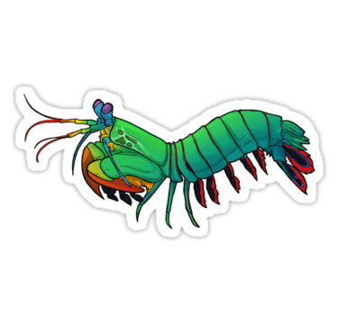

Soco a 80MK/h:
Fatos sobre o Stomatopoda
informações gerais a respeito e nome cientifico(dontodactylus scyllarus) em italico / ino, Filo, Subfilo, Classe, Subclasse e Ordem. Tais informações você consegue obter na Wikipedia.
informações gerais a respeito e nome cientifico(dontodactylus scyllarus) em italico / ino, Filo, Subfilo, Classe, Subclasse e Ordem. Tais informações você consegue obter na Wikipedia.